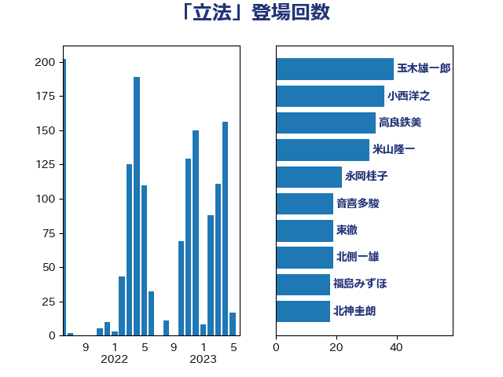

単語「立法」

| 小西洋之 | 立憲民主党 | 85 回 |
| 高良鉄美 | 無所属 | 52 回 |
| 山添拓 | 日本共産党 | 30 回 |
| 足立康史 | 日本維新の会 | 30 回 |
| 田村智子 | 日本共産党 | 26 回 |
| 石橋通宏 | 立憲民主党 | 26 回 |
| 福島みずほ | 社会民主党 | 20 回 |
| 小沼巧 | 立憲民主党 | 19 回 |
| 伊藤孝恵 | 国民民主党 | 18 回 |
| 宮崎政久 | 自由民主党 | 18 回 |
| 吉田統彦 | 立憲民主党 | 17 回 |
| 奥野総一郎 | 立憲民主党 | 17 回 |
| 北神圭朗 | 無所属 | 16 回 |
| 古川禎久 | 自由民主党 | 15 回 |
| 吉川沙織 | 立憲民主党 | 15 回 |
| 嘉田由紀子 | 無所属 | 15 回 |
| 東徹 | 日本維新の会 | 15 回 |
| 玉木雄一郎 | 国民民主党 | 15 回 |
| 田村憲久 | 自由民主党 | 15 回 |
| 伊波洋一 | 無所属 | 14 回 |
| 阿部知子 | 立憲民主党 | 14 回 |
| 塩川鉄也 | 日本共産党 | 13 回 |
| 松沢成文 | 日本維新の会 | 13 回 |
| 赤嶺政賢 | 日本共産党 | 13 回 |
| 鎌田さゆり | 立憲民主党 | 13 回 |
| 北側一雄 | 公明党 | 12 回 |
| 杉尾秀哉 | 立憲民主党 | 11 回 |
| 階猛 | 立憲民主党 | 11 回 |
| 高橋千鶴子 | 日本共産党 | 10 回 |
| 柚木道義 | 立憲民主党 | 9 回 |
| 西田昌司 | 自由民主党 | 9 回 |
| 寺田学 | 立憲民主党 | 8 回 |
| 山田賢司 | 自由民主党 | 8 回 |
| 笠井亮 | 日本共産党 | 8 回 |
| 中川正春 | 立憲民主党 | 7 回 |
| 倉林明子 | 日本共産党 | 7 回 |
| 川合孝典 | 国民民主党 | 7 回 |
| 後藤茂之 | 自由民主党 | 7 回 |
| 石川博崇 | 公明党 | 7 回 |
| 磯崎仁彦 | 自由民主党 | 7 回 |
| 上川陽子 | 自由民主党 | 6 回 |
| 中谷元 | 自由民主党 | 6 回 |
| 塩村あやか | 立憲民主党 | 6 回 |
| 大石あきこ | れいわ新選組 | 6 回 |
| 櫻井周 | 立憲民主党 | 6 回 |
| 牧山ひろえ | 立憲民主党 | 6 回 |
| 石垣のりこ | 立憲民主党 | 6 回 |
| 秋野公造 | 公明党 | 6 回 |
| 篠原豪 | 立憲民主党 | 6 回 |
| 菅義偉 | 自由民主党 | 6 回 |
| 藤田文武 | 日本維新の会 | 6 回 |
| 中島克仁 | 立憲民主党 | 5 回 |
| 井上哲士 | 日本共産党 | 5 回 |
| 坂本哲志 | 自由民主党 | 5 回 |
| 川田龍平 | 立憲民主党 | 5 回 |
| 平木大作 | 公明党 | 5 回 |
| 浮島智子 | 公明党 | 5 回 |
| 田村貴昭 | 日本共産党 | 5 回 |
| 石田昌宏 | 自由民主党 | 5 回 |
| 福岡資麿 | 自由民主党 | 5 回 |
| 稲富修二 | 立憲民主党 | 5 回 |
| 稲田朋美 | 自由民主党 | 5 回 |
| 野田聖子 | 自由民主党 | 5 回 |
| 上田清司 | 国民民主党 | 4 回 |
| 佐藤茂樹 | 公明党 | 4 回 |
| 古川俊治 | 自由民主党 | 4 回 |
| 宮本徹 | 日本共産党 | 4 回 |
| 小野泰輔 | 日本維新の会 | 4 回 |
| 山口壯 | 自由民主党 | 4 回 |
| 岩谷良平 | 日本維新の会 | 4 回 |
| 打越さく良 | 立憲民主党 | 4 回 |
| 新藤義孝 | 自由民主党 | 4 回 |
| 本村伸子 | 日本共産党 | 4 回 |
| 柴田巧 | 日本維新の会 | 4 回 |
| 森本真治 | 立憲民主党 | 4 回 |
| 浅野哲 | 国民民主党 | 4 回 |
| 湯原俊二 | 立憲民主党 | 4 回 |
| 田所嘉徳 | 自由民主党 | 4 回 |
| 紙智子 | 日本共産党 | 4 回 |
| 西岡秀子 | 国民民主党 | 4 回 |
| 井上信治 | 自由民主党 | 3 回 |
| 古屋範子 | 公明党 | 3 回 |
| 大西健介 | 立憲民主党 | 3 回 |
| 山井和則 | 立憲民主党 | 3 回 |
| 山口俊一 | 自由民主党 | 3 回 |
| 山本太郎 | れいわ新選組 | 3 回 |
| 斉藤鉄夫 | 公明党 | 3 回 |
| 斎藤嘉隆 | 立憲民主党 | 3 回 |
| 末松信介 | 自由民主党 | 3 回 |
| 松村祥史 | 自由民主党 | 3 回 |
| 柳ヶ瀬裕文 | 日本維新の会 | 3 回 |
| 田島麻衣子 | 立憲民主党 | 3 回 |
| 若松謙維 | 公明党 | 3 回 |
| 茂木敏充 | 自由民主党 | 3 回 |
| 萩生田光一 | 自由民主党 | 3 回 |
| 西田実仁 | 公明党 | 3 回 |
| 長浜博行 | 無所属 | 3 回 |
| 音喜多駿 | 日本維新の会 | 3 回 |
| 下村博文 | 自由民主党 | 2 回 |
| 串田誠一 | 日本維新の会 | 2 回 |
| 加田裕之 | 自由民主党 | 2 回 |
| 古賀友一郎 | 自由民主党 | 2 回 |
| 吉良よし子 | 日本共産党 | 2 回 |
| 國重徹 | 公明党 | 2 回 |
| 大串博志 | 立憲民主党 | 2 回 |
| 太栄志 | 立憲民主党 | 2 回 |
| 小倉將信 | 自由民主党 | 2 回 |
| 小宮山泰子 | 立憲民主党 | 2 回 |
| 小沢雅仁 | 立憲民主党 | 2 回 |
| 小泉進次郎 | 自由民主党 | 2 回 |
| 山下雄平 | 自由民主党 | 2 回 |
| 岡本あき子 | 立憲民主党 | 2 回 |
| 岸真紀子 | 立憲民主党 | 2 回 |
| 平井卓也 | 自由民主党 | 2 回 |
| 後藤祐一 | 立憲民主党 | 2 回 |
| 徳永久志 | 立憲民主党 | 2 回 |
| 新垣邦男 | 立憲民主党 | 2 回 |
| 本田太郎 | 自由民主党 | 2 回 |
| 林芳正 | 自由民主党 | 2 回 |
| 枝野幸男 | 立憲民主党 | 2 回 |
| 梅村聡 | 日本維新の会 | 2 回 |
| 河西宏一 | 公明党 | 2 回 |
| 浅田均 | 日本維新の会 | 2 回 |
| 浜田聡 | NHK党 | 2 回 |
| 浦野靖人 | 日本維新の会 | 2 回 |
| 清水貴之 | 日本維新の会 | 2 回 |
| 田中健 | 国民民主党 | 2 回 |
| 田嶋要 | 立憲民主党 | 2 回 |
| 田村まみ | 国民民主党 | 2 回 |
| 石川大我 | 立憲民主党 | 2 回 |
| 神津たけし | 立憲民主党 | 2 回 |
| 船田元 | 自由民主党 | 2 回 |
| 西村康稔 | 自由民主党 | 2 回 |
| 西銘恒三郎 | 自由民主党 | 2 回 |
| 里見隆治 | 公明党 | 2 回 |
| 野田佳彦 | 立憲民主党 | 2 回 |
| 阿部司 | 日本維新の会 | 2 回 |
| 高木かおり | 日本維新の会 | 2 回 |
| 高木毅 | 自由民主党 | 2 回 |
| 高橋はるみ | 自由民主党 | 2 回 |
| たがや亮 | れいわ新選組 | 1 回 |
| ながえ孝子 | 無所属 | 1 回 |
| 一谷勇一郎 | 日本維新の会 | 1 回 |
| 三木圭恵 | 日本維新の会 | 1 回 |
| 三浦信祐 | 公明党 | 1 回 |
| 三谷英弘 | 自由民主党 | 1 回 |
| 下野六太 | 公明党 | 1 回 |
| 中司宏 | 日本維新の会 | 1 回 |
| 中川宏昌 | 公明党 | 1 回 |
| 中曽根康隆 | 自由民主党 | 1 回 |
| 中谷一馬 | 立憲民主党 | 1 回 |
| 中谷真一 | 自由民主党 | 1 回 |
| 中野洋昌 | 公明党 | 1 回 |
| 井出庸生 | 自由民主党 | 1 回 |
| 井坂信彦 | 立憲民主党 | 1 回 |
| 仁木博文 | 無所属 | 1 回 |
| 伊佐進一 | 公明党 | 1 回 |
| 伊藤渉 | 公明党 | 1 回 |
| 佐藤英道 | 公明党 | 1 回 |
| 勝部賢志 | 立憲民主党 | 1 回 |
| 古屋圭司 | 自由民主党 | 1 回 |
| 古川康 | 自由民主党 | 1 回 |
| 吉川赳 | 無所属 | 1 回 |
| 吉田宣弘 | 公明党 | 1 回 |
| 吉田忠智 | 立憲民主党 | 1 回 |
| 和田義明 | 自由民主党 | 1 回 |
| 城内実 | 自由民主党 | 1 回 |
| 大口善徳 | 公明党 | 1 回 |
| 大野敬太郎 | 自由民主党 | 1 回 |
| 守島正 | 日本維新の会 | 1 回 |
| 安江伸夫 | 公明党 | 1 回 |
| 宮本周司 | 自由民主党 | 1 回 |
| 宮本岳志 | 日本共産党 | 1 回 |
| 小川淳也 | 立憲民主党 | 1 回 |
| 小林鷹之 | 自由民主党 | 1 回 |
| 小里泰弘 | 自由民主党 | 1 回 |
| 山下芳生 | 日本共産党 | 1 回 |
| 山下貴司 | 自由民主党 | 1 回 |
| 山岸一生 | 立憲民主党 | 1 回 |
| 山本剛正 | 日本維新の会 | 1 回 |
| 山本香苗 | 公明党 | 1 回 |
| 山谷えり子 | 自由民主党 | 1 回 |
| 岩屋毅 | 自由民主党 | 1 回 |
| 岩渕友 | 日本共産党 | 1 回 |
| 岸田文雄 | 自由民主党 | 1 回 |
| 掘井健智 | 日本維新の会 | 1 回 |
| 末松義規 | 立憲民主党 | 1 回 |
| 本庄知史 | 立憲民主党 | 1 回 |
| 杉久武 | 公明党 | 1 回 |
| 杉田水脈 | 自由民主党 | 1 回 |
| 松本尚 | 自由民主党 | 1 回 |
| 柴山昌彦 | 自由民主党 | 1 回 |
| 柿沢未途 | 無所属 | 1 回 |
| 梅村みずほ | 日本維新の会 | 1 回 |
| 梶山弘志 | 自由民主党 | 1 回 |
| 森屋宏 | 自由民主党 | 1 回 |
| 森屋隆 | 立憲民主党 | 1 回 |
| 森山浩行 | 立憲民主党 | 1 回 |
| 水岡俊一 | 立憲民主党 | 1 回 |
| 池下卓 | 日本維新の会 | 1 回 |
| 津島淳 | 自由民主党 | 1 回 |
| 海江田万里 | 立憲民主党 | 1 回 |
| 熊田裕通 | 自由民主党 | 1 回 |
| 牧原秀樹 | 自由民主党 | 1 回 |
| 牧義夫 | 立憲民主党 | 1 回 |
| 玄葉光一郎 | 立憲民主党 | 1 回 |
| 矢倉克夫 | 公明党 | 1 回 |
| 石井正弘 | 自由民主党 | 1 回 |
| 石井章 | 日本維新の会 | 1 回 |
| 石井苗子 | 日本維新の会 | 1 回 |
| 石原正敬 | 自由民主党 | 1 回 |
| 石破茂 | 自由民主党 | 1 回 |
| 福山哲郎 | 立憲民主党 | 1 回 |
| 福島伸享 | 無所属 | 1 回 |
| 秋葉賢也 | 自由民主党 | 1 回 |
| 竹谷とし子 | 公明党 | 1 回 |
| 米山隆一 | 立憲民主党 | 1 回 |
| 舟山康江 | 国民民主党 | 1 回 |
| 若宮健嗣 | 自由民主党 | 1 回 |
| 西村智奈美 | 立憲民主党 | 1 回 |
| 赤羽一嘉 | 公明党 | 1 回 |
| 近藤昭一 | 立憲民主党 | 1 回 |
| 進藤金日子 | 自由民主党 | 1 回 |
| 道下大樹 | 立憲民主党 | 1 回 |
| 重徳和彦 | 立憲民主党 | 1 回 |
| 金子恭之 | 自由民主党 | 1 回 |
| 鈴木義弘 | 国民民主党 | 1 回 |
| 鈴木貴子 | 自由民主党 | 1 回 |
| 長妻昭 | 立憲民主党 | 1 回 |
| 阿達雅志 | 自由民主党 | 1 回 |
| 馬場伸幸 | 日本維新の会 | 1 回 |
| 高野光二郎 | 自由民主党 | 1 回 |
| 鷲尾英一郎 | 自由民主党 | 1 回 |